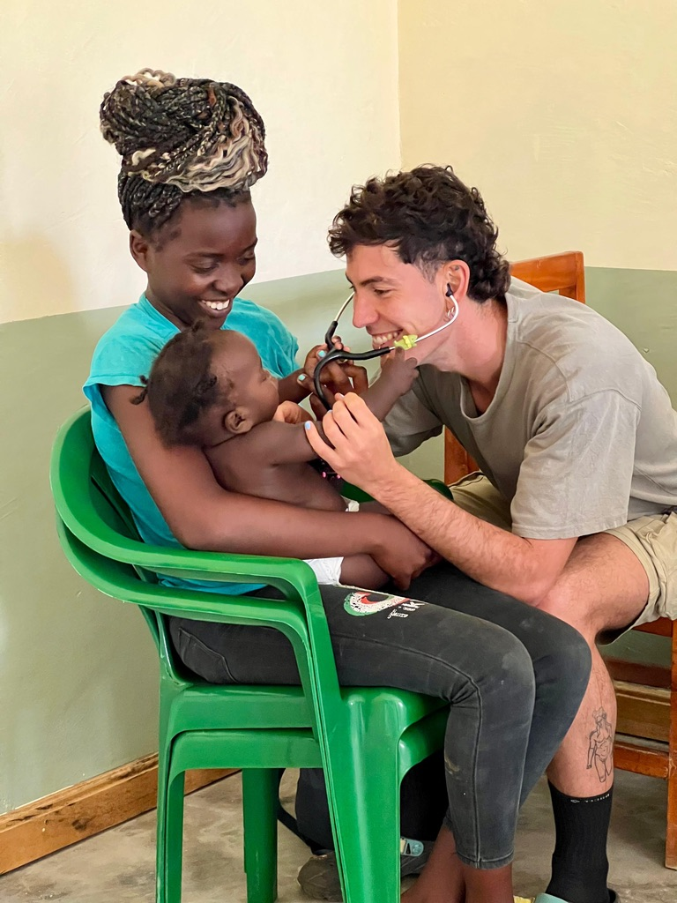

Experience Medicine in the Heart of Africa
Join us in Fort Portal, Uganda to share knowledge, support communities, and grow as a professional.
Introduction
Salud-Medical Volunteers in Africa (SALUD-MED-VOL AFRICA) is a Ugandan based medical volunteering organization aimed at offering skilled medical professionals a chance to experience a new working environment, new culture and sharing medical knowledge with the local (Ugandan based) health professionals, in a diverse yet exciting health care system in Uganda.
SALUD MED-VOL AFRICA also aims to provide accessible health care services to underserved communities in Uganda. This can be achieved by mobilizing qualified medical professionals and providing resources to support sustainable health care initiatives.

Project Highlights
- Getting actively involved in the daily work of the hospital
- Assist patients (getting them from one service point to another) at the hospital site
- Shadowing professionals medics and assist whenever needed
- Treating minor injuries, vaccinations etc. (depending on skills)
- Taking rounds of the wards, maintaining files
- Doing routine patient checkups like measure Blood pressure, pulse, etc.
SALUD MED-VOL AFRICA strives to improve the health conditions of children and adults in resource limited hospital settings in Uganda, through various medical and healthcare intervention projects including but not limited to Village Health Outreaches, medical camps and so many other interventions.
Project Location
This project is located in the western part of Uganda, in the Rwenzori subregion, Fort Portal tourism City. The trip starts from Entebbe International Airport, through Kampala capital City, to Fort Portal Tourism city, a stretch of 342km.
Volunteers joining the program will be based in Fort Portal where their accommodation site has already been secured. Fort Portal Tourism City is one of the most relaxed and attractive tourism destinations in Uganda, with a known hospitable weather and a welcoming community.
Arrival & Airport Pickup
After booking and confirming your placement, please book your flights to arrive at Entebbe International Airport (the only international airport in Uganda). Our Coordinator will arrange a pickup for you from the airport in Entebbe at agreed time and they will drive you to the volunteer house in Fort Portal Tourism City, where our local coordinators team will be gladly waiting to receive you.
Program Details
Orientation & PlacementsOrientation
Orientation and Placement will be done the next day after arrival. Volunteer orientation is an overview of the project’s mission, expectations and introduction to the local community, local coordinators and project site. Following your arrival in Uganda you will be given a presentation by the co-coordinating project team to prepare you for the work you will be doing.
Your Role
Volunteers exact roles within the Ugandan hospitals or clinics project will be determined by your level of medical experience as well as by the enthusiasm and effort which you show to the local staff.
Pre-university interns usually start by observing. Volunteers with professional credentials or currently enrolled students act based on abilities.
Placements available in:
Conditions: Facilities within the hospitals and clinics are basic. Volunteers should be prepared to see some shocking cases, and try not to get emotionally involved. We support short and long term placements.
Volunteer Accommodation
Volunteers are provided accommodation in our beautiful volunteer house or in a homestay accommodation managed by the local coordinating team, with a full time in house staff to always offer required support.
- Three meals a day (Breakfast, Lunch and Dinner) provided Monday – Sunday.
- Neat and clean accommodations with onsite Wi-Fi.
- Shared rooms (same gender sharing basis).
- Close to amenities: banks, ATMs, cafes, shopping.
- Placements are 5–30 minutes away.
- Common lounge area for relaxing.
Weekends & Free Time
Over the weekends or evenings, participants are free to eat out and explore. We arrange city day tours and long-weekend safaris, inclusive of gorilla trekking in southern western Uganda, and safaris in Murchison Falls.
Program Fees
Volunteering in Uganda with SALUD MED-VOL AFRICA is affordable, low cost and budget friendly.
3 Weeks
Minimum Duration
- Booking Deposit
- Pre-Departure Support
- Airport Pickup
- Project Orientation
- Accommodation & 3 Meals Daily
- Project Registration
- In-Country & 24h HQ Support
4 Weeks
Recommended Experience
- Booking Deposit
- Pre-Departure Support
- Airport Pickup
- Project Orientation
- Accommodation & 3 Meals Daily
- Project Registration
- In-Country & 24h HQ Support
Extra Week
Per Week Extension
- Booking Deposit
- Pre-Departure Support
- Airport Pickup
- Project Orientation
- Accommodation & 3 Meals Daily
- Project Registration
- In-Country & 24h HQ Support
Program Fee Excludes:
- Flights
- Visas
- Insurance
- Personal Expenses
- Airport Drop off (Can be arranged)
Note: An application and placement booking deposit of $360 (per person) which comes off the total program cost is charged to secure your placement. The balance is due within 6 weeks of start.
For Medical Placements: A hospital administration fee of $100 per week is added.
Project Quick Facts
How to Apply
To start the process fill SALUD MED-VOL AFRICA Volunteer application form and submit it for consideration.